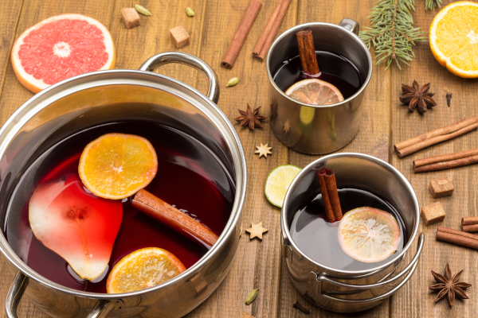

Quentão de vinho
ingredientes
- 1 xícara de chá de açúcar
- Casca de uma laranja
- Casca de um limão
- Gengibre picado a gosto
- Canela em ramas a gosto
- Cravos a gosto
- 1 xícara de chá de água
- 1,5 L de vinho tinto seco ou suave
- 1/2 xícara de chá de cachaça
Modo de preparo
- Reúna todos os ingredientes;
- Em uma panela, coloque o açúcar, a casca de laranja, a casca de limão, o gengibre, a canela, o cravo e a água;
- Leve ao fogo baixo e mexa bem até o açúcar derreter;
- Adicione o vinho e a cachaça. Misture bem;
- Deixe ferver por cerca de 10 minutos, mexendo por vezes;
- Agora é só servir.
Bom apetite!